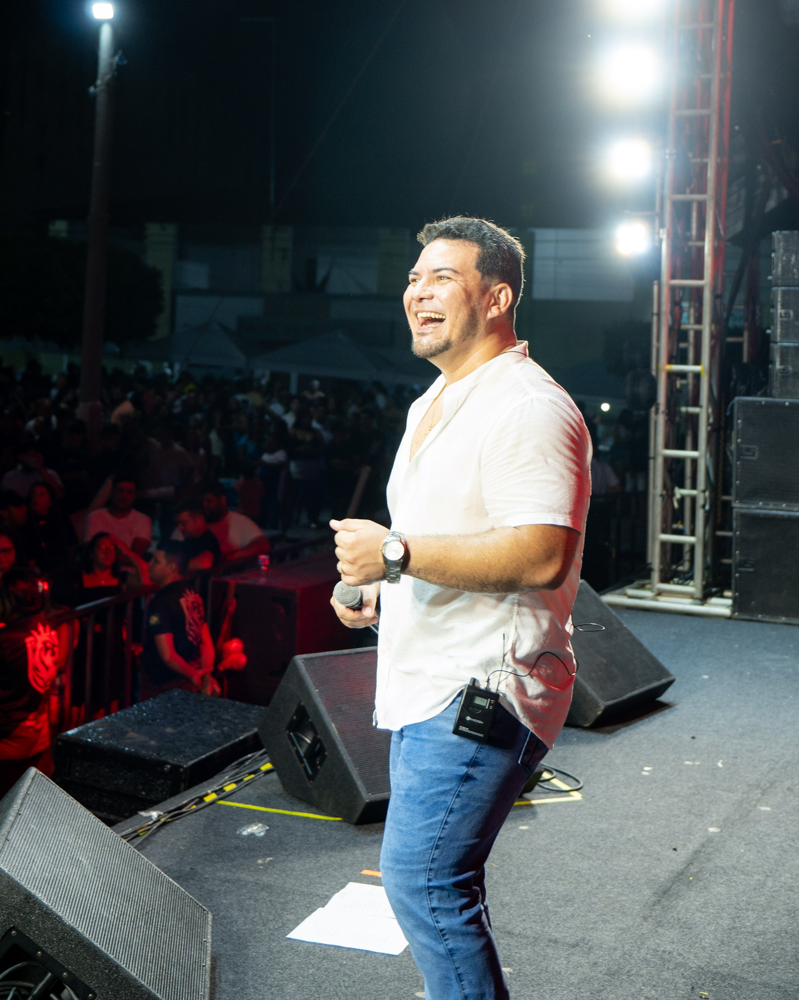
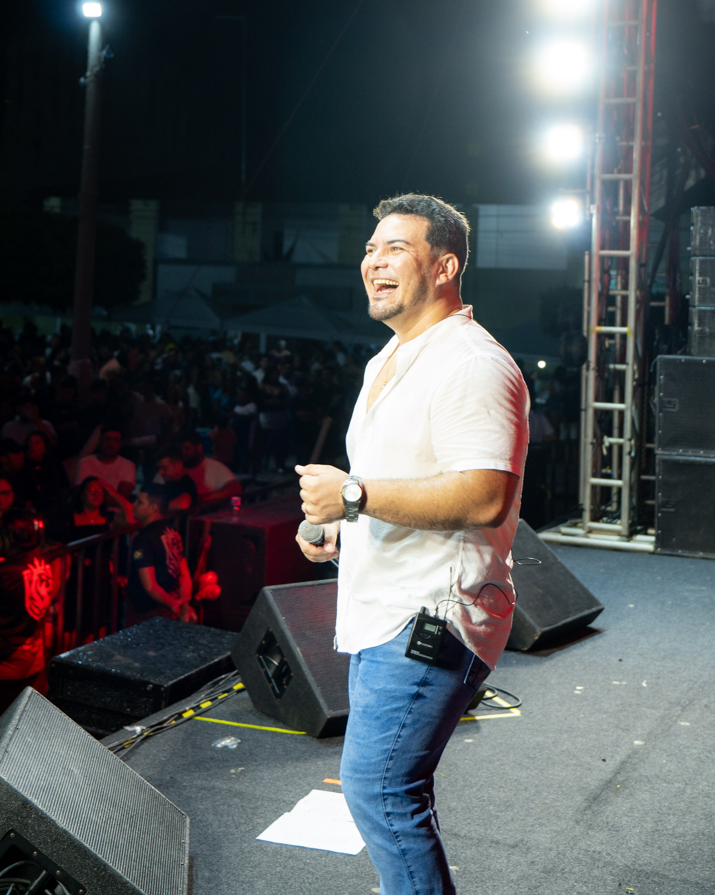

Eventos | Keliane
O aniversário do município de Guaiúba foi celebrado com muita alegria e emoção, reunindo a comunidade em um evento especial que ficará marcado na memória de todos. A festa trouxe momentos de união, cultura e música, transformando a noite em uma verdadeira celebração da cidade.
Entre as atrações, a queridíssima cantora Keiliane brilhou em um dos shows. Radiante e cheia de energia, ela encantou a todos com sua presença marcante e sua voz única, que emocionou o público. Fotografá-la foi uma experiência leve e prazerosa, já que sua luz natural transpareceu em cada registro.
Para a INTS Fotografia, foi uma honra participar e eternizar esse momento especial. Estar presente em ocasiões como essa nos motiva e reforça o quanto amamos o que fazemos: registrar a beleza de instantes que carregam tanto significado.
Desejamos que a Keiliane continue trilhando um caminho de sucesso, alcançando todos os seus sonhos e conquistando ainda mais palcos. Ficamos muito felizes em ter registrado essa apresentação e em poder contribuir com memórias que certamente serão guardadas com carinho.
 
